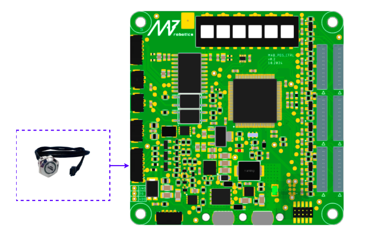

Overview#
ON/OFF SWITCH:#
After connecting, the switch can be used to enable the PDS and monitor its state. Please remember to set the thresholds if the visual battery monitoring is needed.
The switch need to be connected as below:


STO1/2#
An example STO connection is presented below. The mechanism can be realized with pair of the normally closed contacts, or two different E-stops - like one mechanical, and the second one wireless to increase the safety. The STOx inputs need to be polarized with external voltage. It can be for example 12V from PDS_IC module, or from other power supply dedicated to safety in the application.

Example wired system can look like below:

Beside STO inputs, there is presented connection to the PDS_IC module. Such cable is not included in the set, but the housing is. The E-stop button is also NOT included.
Note
The proposed solution is for reference only - the safety considerations has to be evaluated and analyzed properly to ensure that the solution match the requirements. Usage of the voltage from the IC module for supplying the E-stop circuits can be acceptable in the end application or not, dependly on the system architecture and needs.
The last step is configuration of the STO switch. The schematic diagram of the STO configuration is presented below:

The switch determines what happens with the connected modules after STO triggering. If set to 0 (left position), module remains on. If set to 1 (right position), the power is cut off from particular module. Table below shows the effects of setting the switch in position 1 for different modules:
Module type |
Enabled STO effect |
|---|---|
Isolated Converter |
The power supply is cut off from the DC/DC converter. For example, as a result, connected devices such as computer may shut down |
Power Stage |
The load is disconnected from the power supply. This can lead to de-energization of connected actuators — for example, a robot may collapse as torque is no longer being generated. |
Brake Resistor |
The energy is no longer dissipated in the resistor, independently of the voltage level on the DC bus. |
For a real world application, the proper strategy can be to enable STO on the PS modules, and disable on the IC and BR module. In such case, the motors are instantaneously turned off, the computers are still working, and the potential regenerative energy that can appear on the motors bus is dissipated safely. Please note that the signal of the STO triggering is transmitted by the CTRL module over the CAN FD independently on the setting on the switch. There is possibility to implement other safety strategy, like setting the torque references to 0 on the actuators, or enabling the strong damping on the joints to, for example, make robot slowly fall down in controllable way, or enable breaking by shorting the motor phases. Please remember that such mechanism can be much slower and less reliable than the mechanism based on the hardware STO circuits, which are purely hardware based and only delay comes from the signals propagation delay and the bus capacitance discharging.
CAN FD#
CANdle or CANdle HAT should be connected to the CAN port of the Control board module.


Computers and Sensors#
Prepare the wires to connect your SBCs and sensor packages with power output from the IC submodule. Ensure proper polarization before turning on the power supply to prevent damage to the load. Below is the example wiring of the PDS IC module with computers and sensors:

High-power Loads#
Use the Power Stage (PS) output connectors to supply drives or other load.


Warning
Please note that CAN interface on the PDS Control board is NOT connected to the sockets on the Power Stage module. User should provide CAN lines connection to both the Control Board and the Drivers powered by the Power Stage module.
It is also important that CAN FD lines are not shared between MicroFit connectors. They only share power lines.
Please take a look at the diagram below for better understanding how to properly connect CAN lines to the PDS and Drivers powered by Power Stage.

Power supply#
Prepare a safe ( fused ) connection between power source and the power bus bar. PDS device set is equipped with the power cable and M5 screws to make connection with the power bus bar.
Warning
This cable attached can be used for start-up and test. It’s maximum current is 16A. For the final integration ensure that the used wire diameter/AWG can handle the current drawn by the load from power source.

Enable the PDS device#
After connecting power supply the device is ready to operate. To turn it on press the power button for 2 seconds until it turns purple to indicate boot up procedure. After boot-up the PDS device will start it’s normal operating mode and RGB Button will indicate battery level ( Green / Yellow / Red ).
Note
Default voltage levels for the battery monitor feature are set to 0V so the Button will indicate fully charged battery (Green)
Now the device is ready to receive FD CAN Commands and perform its routines.
Basic usage#
For basic usage refer to the CANdleSDK software examples for PDS device or make use of our swiss-knife CANdleTOOL CLI application.